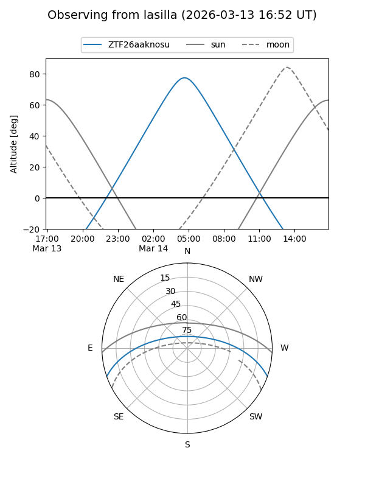
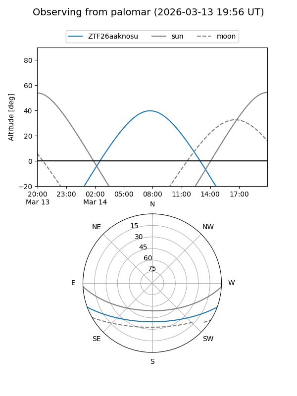

ZTF26aaknosu
Target ZTF26aaknosu at 2026-03-14 08:14
Aliases and brokers:
FINK: link
Lasair: link
ALeRCE: link
alt names
ZTF26aaknosu (ztf,fink_ztf)
Coordinates:
equatorial (ra, dec) = 170.5678,-16.68619
equatorial (HMS+DMS) = 11:22:16.27,-16:41:10.27
galactic (l, b) = (274.0862,+41.13786)
Flags:
Photometry:
last ztfg=20.08
1 ztfg detections
Lightcurve
Visibility


Additional plots